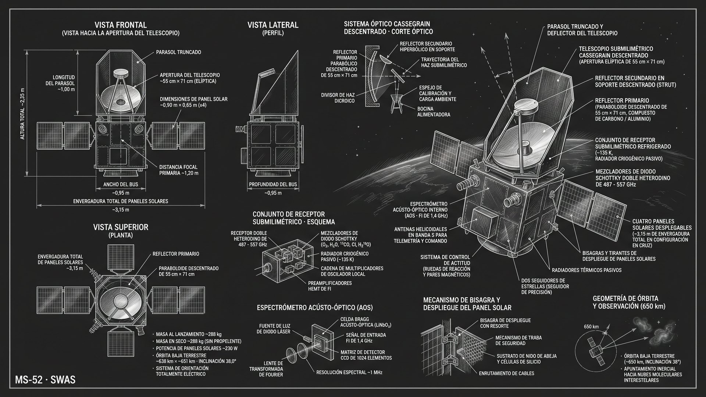

SWAS

Fue un telescopio submilimétrico del programa Small Explorer de la NASA que midió agua, oxígeno molecular, carbono atómico y monóxido de carbono en nubes interestelares para entender cómo nacen estrellas y planetas. Observó más de cien nubes moleculares de la Vía Láctea y en 2005 se reactivó para apoyar Deep Impact.
Sus observaciones científicas regulares se detuvieron el 21 de julio de 2004; en junio de 2005 fue reactivado durante unos tres meses para seguir el impacto de Deep Impact en el cometa 9P/Tempel 1. No consta en las fuentes consultadas una fecha oficial de desactivación definitiva ni de reentrada. Personas: Gary J. Melnick, Gordon Chin
Lo que hizo
- Cartografiado submilimétrico de nubes interestelares — Con su telescopio Cassegrain descentrado de 55 x 71 cm cartografió en cinco líneas espectrales —agua, oxígeno molecular, carbono atómico, 13CO y H2-18O— decenas de nubes moleculares gigantes y núcleos oscuros, con mapas de un grado por un grado.
- Reactivación para el cometa Tempel 1 — En junio de 2005, tras un año en modo de espera, volvió a operar unos tres meses para medir la producción de agua del cometa 9P/Tempel 1 antes, durante y después del impacto de Deep Impact.
Modelo 3D, chat y cómic, en tres idiomas
Fuentes
- nssdc.gsfc.nasa.gov/nmc/spacecraft/display.action?id=1998-071A
- science.nasa.gov/mission/swas/
- www.cfa.harvard.edu/facilities-technology/telescopes-instruments/submillimeter-wave-astronomy-satellite
Ver el índice completo · Proyecto del NASA Space Apps Challenge 2026. Contenido con fuentes citadas.